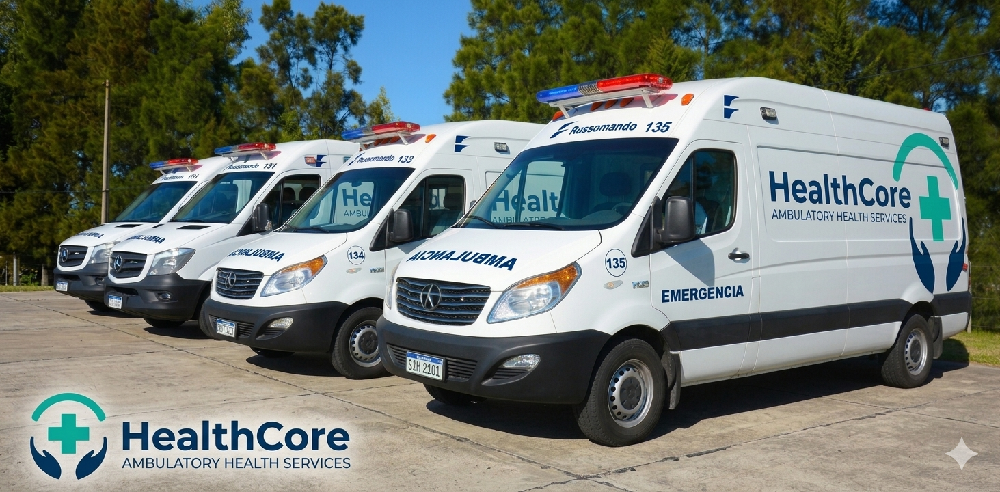

Telefono y WhatsApp
Respuesta en minutos durante horario clinico.

HealthCore | Texas, Florida, Georgia y Reino Unido
Desde 2011 brindamos atencion ambulatoria con citas el mismo dia, procesos agiles y personal bilingue para una experiencia mas humana y eficiente.
Un enfoque ambulatorio integral para pacientes, familias y empresas que necesitan atencion confiable con estandares internacionales.
12 clinicas en TX, FL, GA y UK para coordinar continuidad de cuidado en varios mercados.
Nuestra red comparte historiales clinicos seguros, protocolos estandarizados y equipos locales para garantizar la misma calidad en cada sede.
Horarios extendidos, sin esperas innecesarias y procesos administrativos simplificados.
Priorizamos acceso rapido con agendamiento digital y soporte humano para cada paciente, incluyendo personal bilingue y seguimiento postconsulta.
Atencion primaria, manejo de enfermedades cronicas y seguimiento preventivo centrado en resultados.
Diseñamos planes de cuidado personalizados para diabetes, hipertension y salud cardiovascular, conectando especialistas cuando el caso lo requiere.
Nuevo servicio digital
Agenda consultas virtuales con profesionales de la red HealthCore para seguimiento, orientacion y control de patologias cronicas sin desplazarte.
Nuestras instalaciones

Contamos con una flota de más de 50 unidades móviles circulando las 24hs del día
HealthCore nacio en Austin en 2011 con la mision de elevar la calidad de la atencion ambulatoria. En mas de una decada, evolucionamos hacia una red internacional que combina excelencia clinica, eficiencia operativa y cercania humana.
Compromiso HealthCore
Atender mejor, mas rapido y con empatía en cada consulta.
Nuestro equipo de atencion ambulatoria esta disponible para ayudarte a agendar, resolver dudas de cobertura y orientarte segun tu motivo de consulta.
Respuesta en minutos durante horario clinico.
Consultas generales, documentos y seguimiento.
Austin HQ: 2100 Medical Parkway, Austin, TX.
London Office: 18 Upper Wimpole Street, London, UK.
Lun-Sab: 7:00 a 21:00 | Dom: 8:00 a 15:00